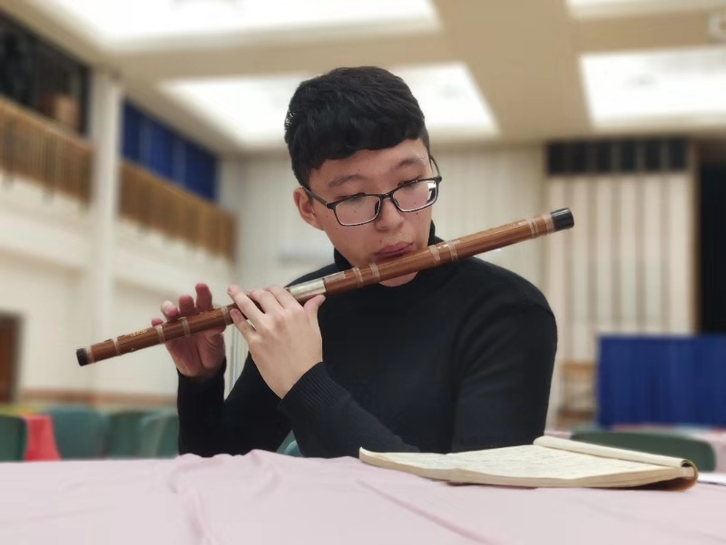

崔睿琦
cuirq3@outlook.com | (86)159-0201-3351
广东省广州市中山大学东校区, 510006
崔睿琦
cuirq3@outlook.com | (86)159-0201-3351
广东省广州市中山大学东校区, 510006

教育经历
中山大学
2016.9 - 2020.6
通信工程工学学士
√ 绩点: 3.9/4.0 (90/100)
研究兴趣
计算机图形学 | 计算机视觉 | 机器学习 | 虚拟现实
研究经历
从单目倾斜图像中实时重建建筑物
2020.5至今
深圳大学VCC实验室研究实习生
√基于ShapeNet建立了新的数据集
√进行重建物体与其相机坐标系下位姿的实验
基于 iOS13 中 CoreNFC 的冷链标签应用设计
2020.1 - 2020.4
中山大学与杨百翰大学交流项目
√对iOS13中CoreNFC框架的使用方法进行总结
√针对甲方工厂的需求，设计冷链标签的读写应用，经测试可投入物流行业使用
关于QED系统中量子传输高效分析方法的研究
2019.4 - 2019.9
中山大学沈乐成教授研究项目
√提出了一种统计数据驱动的模型，与传统方法相比，计算速度提高了3个数量级
√使用MATLAB进行实验验证，并撰写技术报告与论文
用于人群计数的云监管平台开发
2019.4 - 2019.6
“中国软件杯”大学生软件设计大赛
√构建边云协同架构并作为组长统筹组内分工
√在边缘端使用Pytorch开发人群监测系统
√负责云端应用的设计与监控平台网页的开发
√在“中国软件杯”大学生软件设计大赛中荣获二等奖
Radio Frequency Identification （RFID）模拟器开发
2018.6 - 2018.9
中山大学I3C 实验室暑期研究项目
√构建了软件设计架构并作为组长统筹组内分工
√基于LabVIEW和USRP，完成了物理层中编码器与解码器的设计，以及逻辑层Write、BlockWrite等基本指令集的代码编写
√设计了基本的通信系统并将算法嵌入其中
√经过测试，模拟器可以流畅完成所有必需指令的执行
个人荣誉
中山大学优秀毕业生
2020
“中国软件杯”大学生软件设计大赛二等奖
2019
中山大学电子设计大赛三等奖
2018
美国大学生数学建模竞赛H奖
2018
中山大学二等奖学金
2018, 2019
中山大学电子设计大赛二等奖
2017
中山大学一等奖学金
2017
镇泰奖学金
2017
出版物
Ruiqi Cui, Dian Tan, and Yuecheng Shen. Statistically driven model for efficient analysis of few-photon transport in waveguide quantum electrodynamics[J]. Journal of the Optical Society of America B, 2020, 37(2): 420-424.
工作经历
中山大学东校区网络中心
2017.9 - 2019.9
网管负责人
√管理当班网管，定位并解决网络问题
√协助用户办理网络业务
活动经历
中山大学与杨百翰大学全球领导力联合课程
2019.4 - 2019.5
√与杨百翰大学同学参与全球领导力课程
√被选为优秀学生前往杨百翰大学参加毕业设计
个人技能
编程: 熟练使用C, C++, MATLAB, Python, 和 LabVIEW. 曾学习使用过Java, C#, Altium Designer, Proteus, Verilog, VHDL, HFSS, Unity以及汇编语言
兴趣特长: 竹笛十级，旱冰，旅游，跑步，游泳
语言: 中文，英语